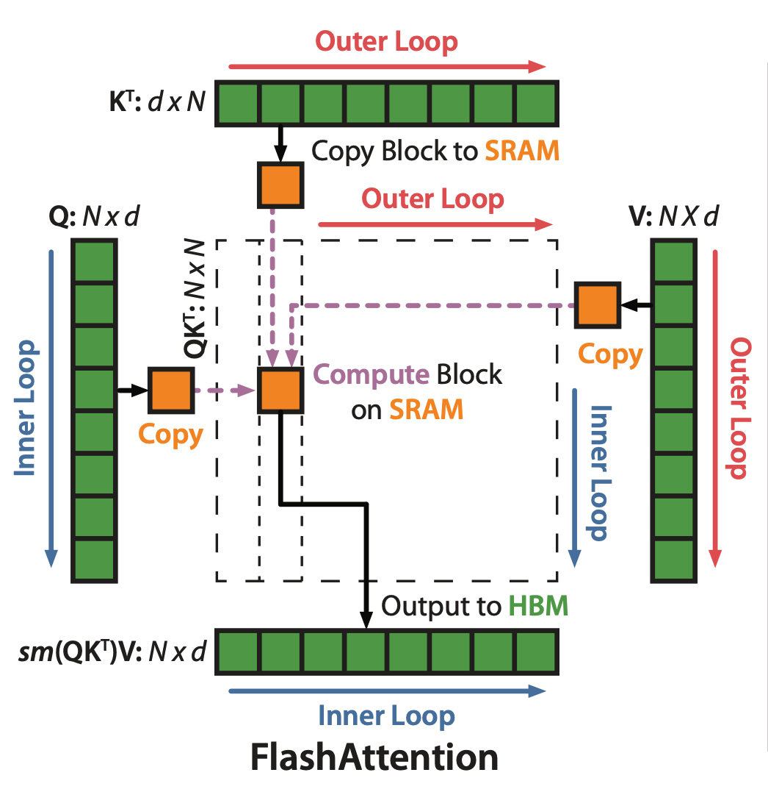

The schematic illustration in the original paper is critical to understand FlashAttention.

Let us denote the index over the outter loop in the above figure as \(i\) and that for the inner loop as \(k\). The operation of self-attention is defined as:
\[O = \text{softmax}(Q K^T) V\]
Or, by separating the steps, we denote:
\[ X = Q K^T A = \text{softmax}(X) O = A V \]
For a specific index \(k\), the induction processes of self-attention is as the following. For the simplicity, we ignore \(k\). Indeed, each of the following variable, for example, \(x_i\), should have been \(x_{k,i}\).
\[ \begin{aligned} x_i &= Q_k K_i^T \\ m_i &= \max(m_{i-1}, x_i) \\ \delta_i &= \delta_{i-1} \exp(m_{i-1}-m_i) + \exp(x_i-m_i) \\ a_i &= \frac{\exp(x_i-m_N)}{\delta_N} \\ o_i &= o_{i-1} + a_i V_i \\ \end{aligned} \]
The first induction process comes from the fact that each element \(a_{k,i}\) is the result of a dot-product between the \(k\)-th row of \(Q\), denoted by \(Q_k\), and the \(i\)-th column of \(K^T\), denoted as \(K_i^T\).
The second, the third, and the fourth are from the previous post about Online Softmax.
The last one is the induction process of the dot-product between the \(k\)-th row of \(A\), denoted by \(a_{k,i}\), or, short for \(a_i\), and the \(k\)-th column of \(V\), denoted as \(V_{k,i}\) and short for \(V_i\).
Because the fourth induction rule depends on \(m_N\) and \(\delta_N\), we counldn’t start it before the completion of the first three. However, the fourth and the fifth could run in parallel.
A key contribution of FlashAttention is the derivation of a surrogate \(\omega_i\) to replace \(a_i\) and \(o_i\). This \(\omega_i\) can run in parallel with the first three induction rules.
As \(\omega_i\) is a surrogate of \(a_i\) and \(o_i\), let us examing \(o_i\) first.
\[ o_i = \sum_{j=1}^i \frac{\exp(x_j - m_N)}{\delta_N} V_j \]
Using tricks explained in the post about Online Softmax, we want to define \(\omega_i\) in the following form so that \(\omega_N=o_N\), which is the final result that we want.
\[ \omega_i = \sum_{j=1}^i \frac{\exp(x_j - m_i)}{\delta_i} V_j \]
Also, we want \(\omega_i\) to be inductive, so it should depends on \(\omega_{i-1}\):
\[ \omega_{i-1} = \sum_{j=1}^i \frac{\exp(x_j - m_{i-1})}{\delta_{i-1}} V_j \]
In order to rewrite \(\omega_i\) as a function of \(\omega_{i-1}\), we need to move
\[ \begin{aligned} \omega_i &= \sum_{j=1}^i \frac{\exp(x_j - m_i)}{\delta_i} V_j \\ &= \sum_{j=1}^{i-1} \frac{\exp(x_j - m_i)}{\delta_i} V_j + \frac{\exp(x_i - m_i)}{\delta_i} V_i \\ &= \sum_{j=1}^{i-1} \frac{\exp(x_j - m_{i-1} + m_{i-1} - m_i)}{\delta_{i-1}} \frac{\delta_{i-1}}{\delta_i} V_j + \frac{\exp(x_i - m_i)}{\delta_i} V_i \\ &= \sum_{j=1}^{i-1} \frac{\exp(x_j - m_{i-1})}{\delta_{i-1}} \frac{\exp(m_{i-1} - m_i) \delta_{i-1}}{\delta_i} V_j + \frac{\exp(x_i - m_i)}{\delta_i} V_i \\ &= \omega_{i-1} \frac{\exp(m_{i-1} - m_i) \delta_{i-1}}{\delta_i} + \frac{\exp(x_i - m_i)}{\delta_i} V_i \\ \end{aligned} \]